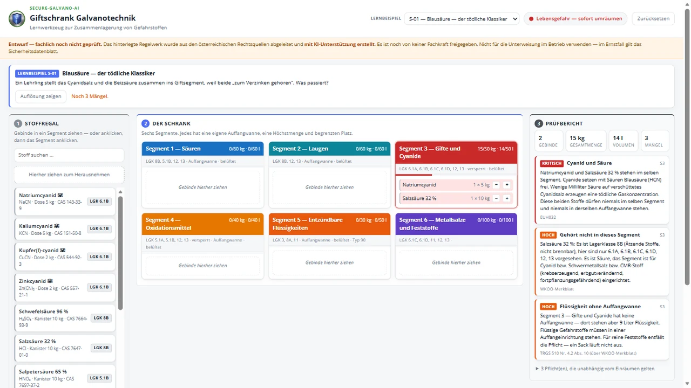

In Ihren Anlagen läuft die Messtechnik längst mit — Ströme, Temperaturen, Zähler, Prüfergebnisse. Wir übergeben ein KI-System und den Arbeitsweg dazu: Damit bauen Ihre Fachkräfte eigene Auswertungen — ohne Programmierkenntnisse und ohne dass Betriebsdaten das Haus verlassen.
Fragen wie „warum steigt der Ausschuss nach dem Wochenende“ beantwortet Ihr Team künftig selbst — in Stunden statt in Projekten.
Bevor die erste Auswertung läuft, steht schriftlich fest, welche Daten ein Werkzeug sehen darf. Das schützt Ihre Rezepturen — und im Streitfall Ihre Position.
Was im Kurs entsteht, bleibt bei Ihnen — samt Quellcode und Regelwerk. Keine Lizenz, kein Abo, kein Wartungsvertrag als Bedingung.
Lehrlinge und junge Fachkräfte arbeiten mit Werkzeugen, die sie selbst gebaut haben. Das bindet stärker als jede Schulung von der Stange.
Verkauft wird hier keine fertige Software, sondern der Arbeitsweg dahinter: Regelwerk, Ablauf mit Rückkopplung, saubere Versionierung — und die Frage, welche Daten ein Werkzeug überhaupt sehen darf. Am Ende steht ein lauffähiges Werkzeug, das Ihnen gehört. Wie eine fertige Auswertung aussieht, zeigt das Video zur Anwendung — gebaut wird in der Werkstatt aber von Ihren Leuten.
Niemand lässt einen Lehrling vom Becherglas direkt auf die Serienanlage. Für Daten gilt dasselbe: Geübt wird zuerst an Übungsdaten, danach an Ihren eigenen — und nicht die Daten wandern zum Werkzeug, sondern das Werkzeug entsteht bei Ihnen.
Hier darf etwas schiefgehen — es sind Versuchsteile. Ihre Leute lernen die Bewegung, ohne dass ein einziger Betriebswert im Spiel ist.
Echte Fragen, unkritische Fälle. Vorher wird sortiert: was ist offen, was intern, was Geschäftsgeheimnis. Erst dann wird gearbeitet.
Wenn ein Ergebnis Entscheidungen trägt, zählt Verlässlichkeit: Prüfungen, Dokumentation, Software, die in zwei Jahren noch läuft.
Der Satz, auf den es ankommt: Ein Geschäftsgeheimnis verliert seinen Schutz bereits durch die Weitergabe ohne Vertraulichkeitsvereinbarung — ein tatsächlicher Abfluss ist dafür nicht nötig. Deshalb steht die Einstufung im Kurs vor der ersten Auswertung, nicht danach. Welche Rahmenwerke dahinterstehen.
Für die Fachberufsschule ist nach genau diesem Arbeitsweg ein Lehrmittel zur Gefahrstofflagerung entstanden: Lehrlinge stellen Gebinde in einen virtuellen Giftschrank, das Werkzeug prüft sofort Zusammenlagerung, Segment und Menge. Der Kern ist eine Regel, nicht das Programm — Cyanid und Säure ergeben Blausäure. Wer diese Meldung einmal selbst ausgelöst hat, vergisst sie nicht mehr.
Fachlich noch nicht abgenommen; die Rechtsgrundlagen sind mit Fundstelle und Abrufdatum dokumentiert. Gezeigt als Beispiel für den Arbeitsweg, nicht als fertiges Produkt.

Eine Stunde am echten Arbeitsplatz, online. Danach wissen Sie, ob das zu Ihrem Betrieb passt — und was es nicht kann.
Werkzeuge, Zugänge, Regelwerk und die Datengrenze. Am Ende steht ein Arbeitsplatz, an dem sicher gearbeitet werden kann.
Ihre Leute bauen ihre erste Auswertung — erst an Übungsdaten, dann an einer echten Frage aus Ihrem Betrieb. Und lernen, das Ergebnis zu prüfen.
Wenn aus dem Versuch Produktion wird. Dann zählt Verlässlichkeit statt Tempo — und wir schauen mit drauf.
Der Arbeitsweg stammt aus der Automobilzulieferung: definierte Freigabestufen, nachvollziehbare Änderungen, für jeden Stand ein Nachweis. Wer aus der Serienfertigung kommt, erkennt ihn sofort wieder.
Wenn Sie mögen, schauen wir uns in einer Stunde an, welche Ihrer Fragen sich mit den vorhandenen Daten beantworten lässt — und welche nicht. Sie müssen dafür nichts vorbereiten und nichts entscheiden.
Über zwanzig Jahre Galvano- und Oberflächentechnik — Lehre bis Meister, Physikstudium. Die eingesetzten KI-Modelle wurden von TÜV AUSTRIA (Trusted AI / TRUSTIFAI) geprüft.